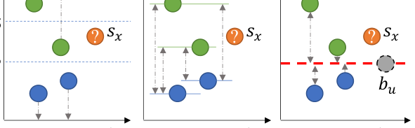
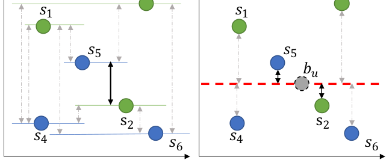

Learning Explicit User Interest Boundary for Recommendation (显式学习用户兴趣边界的推荐方法)
- 会议/期刊: WWW 2022
- 作者与机构: Jianhuan Zhuo, Qiannan Zhu, Yinliang Yue, Yuhong Zhao（中科院信息工程研究所 / 中国人民大学高瓴人工智能学院）
- 推荐链路定位: 精排（损失函数层，可下探至粗排/预排过滤）
- 研究方向: 协同过滤与双塔召回 / 多任务学习与列表级重排
- 论文原文: https://arxiv.org/abs/2111.11026v1
- 开源代码: 暂未开源
TL;DR (1分钟核心速览)
隐式反馈推荐的损失长期在 pointwise（拟合 0/1 标签但忽略排序）与 pairwise（学相对序但训练低效、无法给出判断"是否感兴趣"的阈值）之间二选一。本文为每个用户引入可学习辅助分 \(b_u\)作为用户兴趣边界 (UIB)，令正样本与\(b_u\)、负样本与\(b_u\) 各自做 pairwise 惩罚，得到"整体 pointwise、内部 pairwise"的混合损失。在 4 个数据集、Leave-One-Out + 1:100 采样排序协议下，BPR/NCF/SML/LightGCN 全部被稳定提升，Hit@1 平均 +5.22%，并可在预排阶段过滤 95%–99% 的明显负例。
Background & Motivation (背景与核心矛盾)
- 主流范式: 隐式 CF 只优化"正样本分 \(s_p\)高、负样本分\(s_n\) 低"，落地为逐样本交叉熵（NCF）或逐对 BPR/SML margin 损失。
- 前人局限一: pointwise 在推理时对所有用户共用固定硬阈值（如 0.5），等价于假设全体用户兴趣边界相同；真实兴趣窄的用户，其正样本分数尚未达 0.5 却被判负。
- 前人局限二: pairwise 只保证 \(s_p>s_n\)的相对序，推理阶段缺少"该物品是否值得推荐"的显式个性化判据；且训练后期大量易样本对\(\Delta=s_n-s_p>0\)不再成立，梯度消失（有效对概率约\(M/N^2\)）。
- 核心洞察 (Key Insight): 难样本本质是"贴着决策边界"的样本。既有工作（GAN-based、Cache-based、属性驱动难负采样）都在提高采样命中难样本的概率，而作者反问：为什么不直接用边界本身来代表难样本分数？
- 本文切入点: 把边界显式参数化并放进损失，用一个辅助分同时解决"个性化判据缺失"与"训练效率低下"两个问题。

Method (核心方法设计)
1. 整体框架 (Overall Architecture)
打分函数 \(s(u,x)\)完全不动（内积 / MLP / 图卷积均可），仅在用户侧追加一个标量辅助分\(b_u=\mathbf{w}^{\top}\mathbf{p}_u\)。训练时损失拆成互不耦合的正样本项\(L_p\)与负样本项\(L_n\)：\(L_p\)要求\(s(u,p)\)高过\(b_u\)，\(L_n\)要求\(b_u\)高过\(s(u,n)\)，二者以\(\alpha\)加权。推理时对候选算\(s(u,x)\)，与学到的\(b_u\)比较即可给出"是否正类"的显式判定，而不只是排序。整个流程只多一次\(d\) 维内积，可无侵入地替换任意 backbone 的损失层。
flowchart TD
A["用户/物品表征 P_u, Q_x (内积/MLP/GCN)"] --> B["相关性打分 s(u,x)"]
A --> C["辅助分 b_u = w^T P_u (用户兴趣边界)"]
B --> D["L_p: φ(b_u - s(u,p))"]
C --> D
B --> E["L_n: α·φ(s(u,n) - b_u)"]
C --> E
D --> F["联合优化 → 推理: s(u,x) > b_u 判正"]
E --> F2. 关键设计拆解 (Key Designs)
- UIB 混合损失（Hybrid Loss）：核心式 \(L=\sum_{(u,p)\in\mathcal{I}}\phi\big(b_u-s(u,p)\big)+\alpha\sum_{(u,n)\notin\mathcal{I}}\phi\big(s(u,n)-b_u\big)\)，取\(\phi\)为\(\ln\sigma(\cdot)\)即得 BPR 变体\(L'=-\sum\ln\sigma(s(u,p)-b_u)-\alpha\sum\ln\sigma(b_u-s(u,n))\)。与传统 pairwise 的唯一差别是把\(s(u,n)\)换成\(b_u\)：外层正负两部分独立求和，因此保留了 pointwise 在样本级加权/采样上的自由度；内层仍是 pairwise，因此保留了排序建模能力。
- 边界自适应与类别再平衡：\(L_p\)把\(b_u\)往下拉、\(L_n\)把\(b_u\)往上推，若边界偏离合理区间，失衡梯度会自动将其推回正负样本之间，故不同用户得到不同\(b_u\)（实验中呈不同正态分布）。\(\alpha\)则是打分空间的旋钮：\(\alpha\uparrow\)推动\(b_u\)上移、压缩正样本打分空间\(\mathcal{S}_p\)、同时因 margin 项放大使负样本分布更紧致，实现对正负类别的软性再平衡。
- 训练效率来源与总目标：\(b_u\)天然充当正样本的"难负例"和负样本的"难正例"。若正负各\(N\)个、共\(M\)个有效对，随机配对的 pairwise 有效梯度概率为\(M/N^2\)，UIB 只需\(M/N\)（文中 3 正 3 负示例：1/9 → 1/3）。训练用均匀负采样（每 batch 负样本数为正样本\(M=32\) 倍），不做任何难负挖掘；推理开销几乎为零。

Experimental Setup & Evaluation Protocol (实验设置与评估协议)
- 数据集与预处理:
| 数据集 | #Users | #Items | #Train | 稀疏度/密度 | 特征/场景说明 |
|---|---|---|---|---|---|
| AIV | 5,130 | 1,685 | 26,866 | 0.31% | Amazon Instant Video，5-core 过滤 |
| LastFM | 1,877 | 17,617 | 89,047 | 0.27% | 音乐艺人收听，物品侧极稀疏 |
| ML1M | 6,028 | 3,706 | 988,129 | 4.42% | 电影评分二值化 |
| ML10M | 69,878 | 10,677 | 9,860,298 | 1.32% | 大规模压力测试 |
- 数据划分与防穿越:
Leave-One-Out（每用户最后 1 条为 test、倒数第 2 条为 valid，其余为 train）。 - 排名评测协议:
Sampled Ranking—— 每个测试正样本配 100 个固定负样本（1:100），指标 Hit@1、Hit@10、NDCG@10、MRR@10，同一候选集重复 5 次取均值。 - 对比基线与超参: BPR（pairwise）、NCF-MLP（pointwise CE）、SML（动态 margin 的 metric learning 复杂损失）、LightGCN（复杂图特征编码），共 4 类 backbone × 原始/UIB 两版。所有模型 \(d=32\)、batch=1024、Adagrad、训练 500 epoch（ML10M 100 epoch），\(\alpha\)与\(M\) 按验证集 NDCG@10 网格搜索 + early stop。
Key Experimental Results (实验关键数据)
1. 主实验对比 (Main Results)
| 模型 | AIV (Hit@1 / NDCG@10) | LastFM | ML1M | ML10M |
|---|---|---|---|---|
| BPR | 0.2216 / 0.3848 | 0.4717 / 0.6336 | 0.3327 / 0.5604 | 0.5279 / 0.7336 |
| BPR+UIB | 0.2452 / 0.4063 | 0.4907 / 0.6493 | 0.3486 / 0.5741 | 0.5478 / 0.7473 |
| NCF | 0.2322 / 0.4149 | 0.4827 / 0.6445 | 0.3272 / 0.5581 | 0.5278 / 0.7360 |
| NCF+UIB | 0.2608 / 0.4333 | 0.5205 / 0.6727 | 0.3515 / 0.5753 | 0.5760 / 0.7611 |
| SML | 0.2624 / 0.4559 | 0.5004 / 0.6681 | 0.3013 / 0.5319 | 0.4806 / 0.7030 |
| SML+UIB | 0.2591 / 0.4582 | 0.5077 / 0.6711 | 0.3132 / 0.5352 | 0.4832 / 0.7102 |
| LightGCN | 0.2617 / 0.4540 | 0.5070 / 0.6644 | 0.3329 / 0.5613 | 0.5182 / 0.7254 |
| LightGCN+UIB | 0.2747 / 0.4642 | 0.5237 / 0.6782 | 0.3467 / 0.5717 | 0.5519 / 0.7476 |
| Avg. Improv. | +6.67% / +3.19% | +4.15% / +2.35% | +5.08% / +2.00% | +4.99% / +2.34% |
2. 消融与组件分析 (Ablation & Analysis)
原文以"仅替换损失层"作为结构消融（backbone 与特征编码全部冻结），并补充 \(\alpha\) 与边界偏移敏感性：
| 分析项 | AIV | LastFM | ML1M | ML10M |
|---|---|---|---|---|
| 换回原损失（BPR，Hit@1） | 0.2216 | 0.4717 | 0.3327 | 0.5279 |
| 换回原损失（NCF，Hit@1） | 0.2322 | 0.4827 | 0.3272 | 0.5278 |
| 边界偏移量 = 0 时的 F1 | 0.54 | 0.48 | 0.58 | 0.51 |
| \(s(u,x)<b_u\) 可被预排过滤比例 | 99.37% | 99.69% | 95.24% | 99.06% |
| 有效梯度样本占比（后期 epoch） | 显著高于 BPR | 高于 BPR | BPR 10 epoch 后近乎枯竭 | 同左 |
3. 关键实验发现 (Key Findings)
- 头部件收益最大且与架构正交：Hit@1 平均提升 5.22%，远高于 Hit@10 的 0.9% 量级，说明个性化边界主要改善"首位判定"；pointwise（NCF，+9.18%）受益大于 pairwise（BPR，+5.81%），正因 pointwise 最缺排序性；LightGCN+UIB 仍有 +4.73% Hit@1，证明该损失与图卷积特征编码可叠加。
- 学到的 \(b_u\) 就是最优判负阈值：offset 从 0 向正/负移动会单调地以 precision 换 recall，仅在 offset=0 时 F1 最优（AIV 54%、ML1M 58%），据此可在预排阶段过滤 99.37%（AIV）/95.24%（ML1M）的候选，直接转化为算力节省。
- \(\alpha\)是"打分空间"旋钮而非常规正则：\(\alpha\)增大时\(b_u\)单调上移、\(\mathcal{S}_p\)被压缩、负样本分布更紧致，性能存在最优\(\alpha\)；同时 UIB 全程维持更高的 corrupted rate，验证了\(M/N^2\to M/N\)的效率论断。需注意 SML+UIB 在 AIV 的 Hit@1 反而从 0.2624 微降至 0.2591，说明复杂损失叠加时替换位置（仅改\(L_A\)）并非无损。
Highlights & Limitations (亮点、对比与审稿批判)
- 与代表作对比: 相比 BPR（纯相对序、无阈值、难样本靠采样）与 NCF（固定 0.5 全局阈值），UIB 用一个标量参数同时拿到个性化阈值与难样本；相比 SML（引入可学习 margin \(m_u\) 与多项目标函数）与 GAN/Cache 类难负采样（额外采样器或缓存开销），UIB 不增加任何采样模块，工程侵入性最低。
- 可迁移亮点: (1) "边界作为难样本"的思路可直接移植到双塔召回的内积打分层与 CTR 精排的 bias/position-bias 塔，作为 per-user 自适应偏置；(2) 用 \(s(u,x)<b_u\) 做轻量预排过滤，是低成本级联裁剪的实用技巧。
- 审稿级局限批判: (1) 评测用 1:100 采样排序，阈值 \(b_u\)的绝对校准在全库分布与真实曝光分布下未被检验，实际过滤比例可能失真；(2)\(b_u=\mathbf{w}^{\top}\mathbf{p}_u\)为线性映射，且强依赖人工设定的负采样倍数\(M=32\)与\(\alpha\)网格搜索，当用户兴趣多峰或曝光极度不均衡时单标量边界表达力存疑，文中也缺少对\(\alpha\) 敏感度的方差报告与理论收敛性分析。
Rating (四维评分)
- 方法创新性 (Novelty): ⭐⭐⭐⭐ （把"个性化决策边界"做成可学习标量并重解释为难样本，构思简洁有力，但本质仍是 margin 类损失的变形）
- 评估协议与实验扎实度 (Protocol & Experiments): ⭐⭐⭐⭐ （4 数据集 × 4 backbone 的全替换实验 + offset/\(\alpha\)/corrupted-rate 多维分析扎实，但仅采样排序、无全库 Full-Ranking 与显著性检验）
- 写作与数学规范度 (Clarity & Rigor): ⭐⭐⭐⭐ （损失对比与 \(M/N^2\to M/N\)的效率推导清晰直观，公式统一；\(\alpha\) 与打分空间的定量关系仅有图示、缺解析刻画）
- 工业落地与复现价值 (Industrial & Practical Value): ⭐⭐⭐⭐ （零额外采样器、推理仅加一次内积、可直接用于预排过滤，落地成本极低；可惜未开源，超参与负样本倍数需重调）